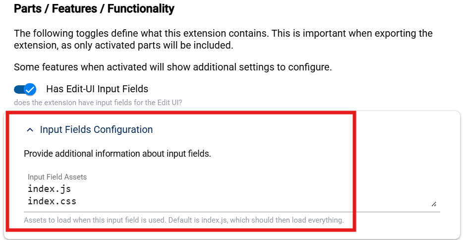
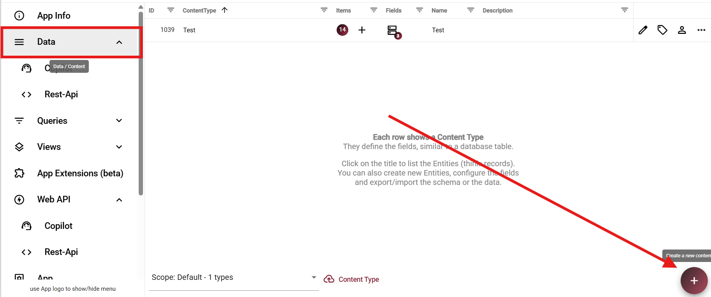
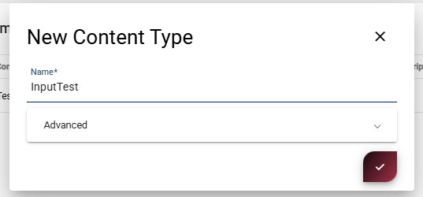
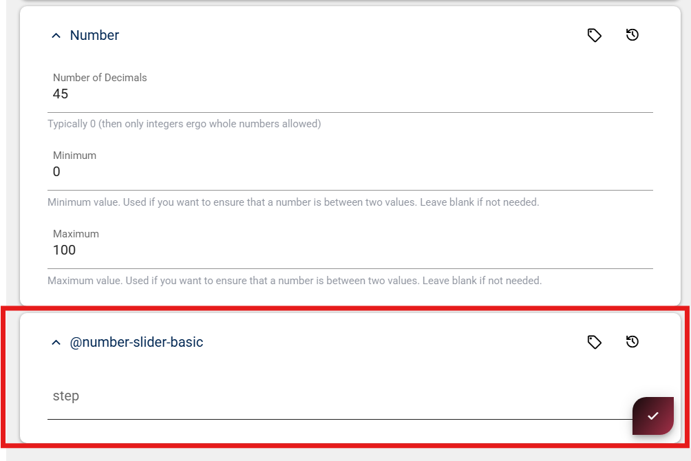

Input field extension
Custom input fields are App Extensions which live inside your App and extend the edit UI. They are plain JavaScript WebComponents which the 2sxc edit dialog can load and talk to.
This page shows how to create a custom input field in JavaScript using a basic number slider as example.
What are input field extensions?
Input Field Extensions let you add your own custom input controls They are small Components that run inside your App and replace or enhance normal fields like text-boxes or dropdowns.
Use them when you want a field, for example sliders, color pickers, tag selectors, or anything the built-in fields cannot do.
1. Folder and Naming
Create the extension in /extensions/ using this pattern:
field-[data-type]-[name]
Examples:
extensions/field-number-slider-basicextensions/field-string-app-color-pickerextensions/field-boolean-icons
Rules:
- Must start with
field- - Second part must be the data type (
string,number,boolean, ...) - Use only lowercase and dashes
2. Create the Extension
2.1 Create the Code
Write code like this in index.js:
(() => {
// This must match the tag name used in the extension definition, and start with "field-"
const tagName = "field-string-example-basic";
// Minimal HTML for the component
const html = `<input type="text" />`;
class BasicField extends HTMLElement {
connectedCallback() {
// Connector given by 2sxc
const connector = this.connector;
this.field = connector.field;
// Get field settings
const settings = connector.field?.settings || {};
// Render input
this.innerHTML = html;
this.input = this.querySelector("input");
// Forward user input back to the 2sxc field API
this.onInput = () => {
this.field?.setValue(this.input.value || null);
};
this.input.addEventListener("input", this.onInput);
}
disconnectedCallback() {
// Clean up when component is removed
this.input.removeEventListener("input", this.onInput);
}
}
customElements.define(tagName, BasicField);
})();
Some Notes:
Tag name:
field-number-slider-basic(must match the extension name)The connector is provided by 2sxc.
2.2 Configure the Extension Definition
Open App Settings -> App Extensions and edit your extension.
In Input Fields Configuration, define which JavaScript files to load - as of now always index.js.

2.3 Examples
You can find further examples of input field extensions in these repositories:
3. Test the Input Field
- 1. Create a Content Type
- 2. Open the Fields Editor
- 3. Add a New Field
- 4. Configure the Field
- 5. Test the Input in the UI
Go to Data and click the + button to create a new Content Type
Give it a name (e.g. InputTest) and save.


4. Ready to Export and Import
The extension is now ready to be exported and imported into other Apps, as described in the Lifecycle.
After importing the Extension, you should be able to use this new input field in your app.
5a. Add Extension Settings (Optional)
If your field needs settings (for example Min, Max, Step), create a separate settings ContentType.
Important
The settings ContentType name must be @{extension-name}.
Example:
- Extension name:
number-slider-basic - Settings ContentType:
@number-slider-basic
Add fields such as Step to this settings type.
2sxc will then show these settings in the field configuration UI.

5b. Include Settings in Extension Export
If you added content-types to configure the input field, then you must include this in the export.
Move the settings ContentType into a dedicated scope so it stays out of normal app content lists.
Recommended scope pattern:
Extensions.{ExtensionName}


History
Created in v21.02